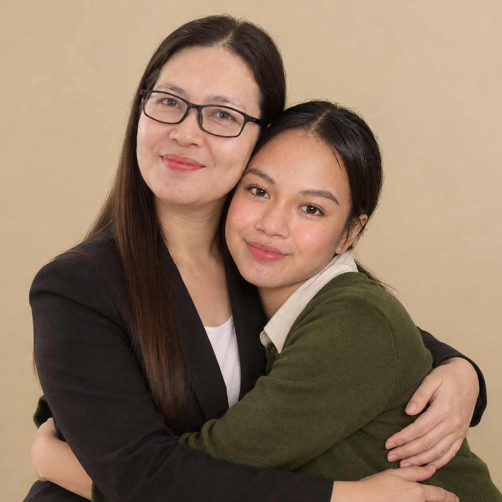
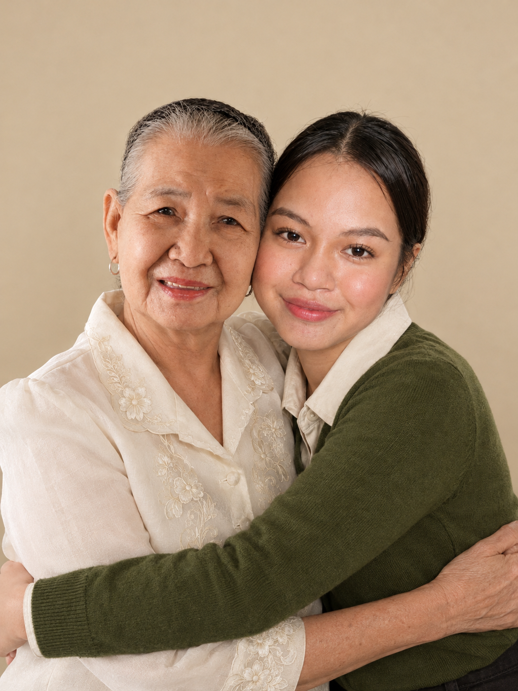

A personal tribute to the people who are part of my story. Open each space to see the portraits, memories, and letters.
A small collection of gratitude, memories, and love.
✳
STILL DREAMING
STILL BECOMING

L.
Mother's photo
images/mother.png
MY MAMA
Leah C. Garin
My mother holds a special place in my story. This tribute is my way of recognizing her place in my life and expressing gratitude for the care and support that have helped shape my journey.
N.
Father's photo
images/father.png
MY PAPA
Niño M. Garin
My father is part of the foundation behind my journey. I appreciate the role he has played in my life and the lessons I continue to carry as I work toward my future.

♡
Grandmother's photo
MY GRANDMOTHER
My Grandmother
My grandmother is part of the family story I hold close. This space honors her place in my life and the memories and connection we share.
♡
Grandfather's photo
MY GRANDFATHER
My Grandfather
My grandfather is an important part of my family history. This tribute recognizes the bond we share and the place he holds in my life.
A NOTE OF GRATITUDE
For the people
behind my becoming.
Every achievement has a story behind it, and every journey is shaped by people who matter.
To my parents: thank you for being part of my life story. I may still be discovering the person I want to become, but my family remains an important part of the journey that brought me here.
This page is not meant to say everything. It is a simple reminder that gratitude deserves a place in the story, too.